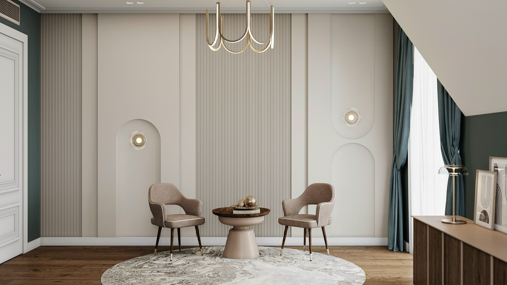
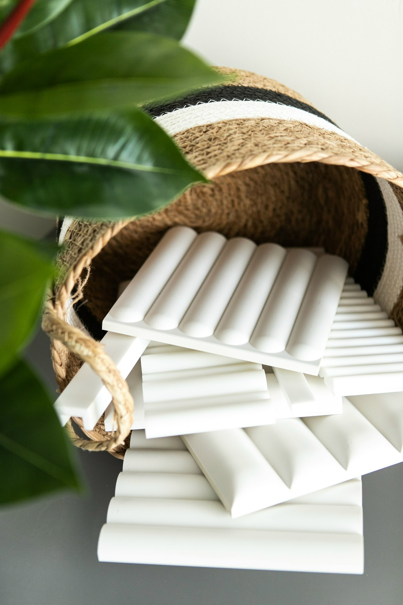

Интерьер
начинается
с ощущения.
Обои, панели, краски и лепной декор.
Поможем собрать материалы, которые
красиво сочетаются — и подходят вам.

Посмотреть. Прикоснуться.
Примерить в своём интерьере.
Ваш интерьер.
Ваша фактура.
От спокойного фона до выразительного акцента.
Начните с материала, который откликается.

Материалы из публикаций МАРТдекорНе просто выбрать.
Почувствовать своё.
На экране сложно оценить настоящий цвет и рельеф. В салоне можно сравнить фактуры, а образцы лепного декора и панелей Orac — примерить прямо на объекте.
Начнём с вашей идеиФотография, коллаж или готовый дизайн-проект.
Соберём сочетаниеПодберём материалы под задачу и бюджет.
Поможем с расчётомУточним количество, наличие и поставку.
Детали, которые
меняют всё.
Небольшая подборка из публикаций салона.
Наличие и стоимость уточним под ваш запрос.
Ваш замысел.
Наша поддержка.
Подбор по спецификации, образцы для согласования и сопровождение комплектации — от первой идеи до поставки материалов.
От идеи
к решению.
Разбираемся в материалах
на примерах из публикаций салона.
38 оценок и 32 отзыва на Яндекс Картах
Читать отзывы покупателей ↗Проверено 31 октября 2026 годаПеред визитом
в салон.
Можно прийти с фотографией интерьера?+
Да. В салоне подбирают материалы по фотографии, коллажу, чертежам или готовому дизайн-проекту.
Как узнать стоимость и наличие?+
Менеджер уточнит наличие, рассчитает материалы и согласует состав заказа. В этой подборке цена запрашивается под конкретную задачу.
Как оформить и оплатить заказ?+
После консультации менеджер выставляет счёт. По условиям сайта предусмотрена 100% предоплата, оплата на сайте не производится.
Есть ли доставка?+
По Ростову-на-Дону — Яндекс Go, в другие города — транспортными компаниями. Стоимость и сроки согласуются с менеджером.
Увидимся
в МАРТдекор.
Ростов-на-Дону
пр. Михаила Нагибина, 30Л
Дизайн-центр WEST, цокольный этаж
Пн–пт: 10:00–19:00 · Сб–вс: 10:00–17:00
Фото комнаты.
Размеры стены.
И вашу идею.
Сочетания материалов можно увидеть вживую. А подходящий вариант — обсудить с человеком, который разбирается в деталях.
Мд